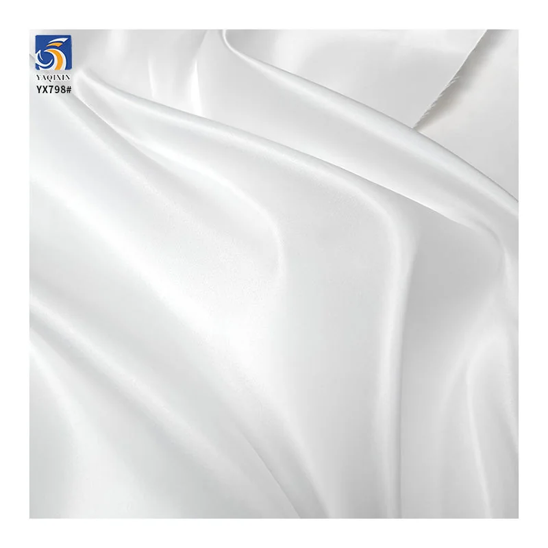
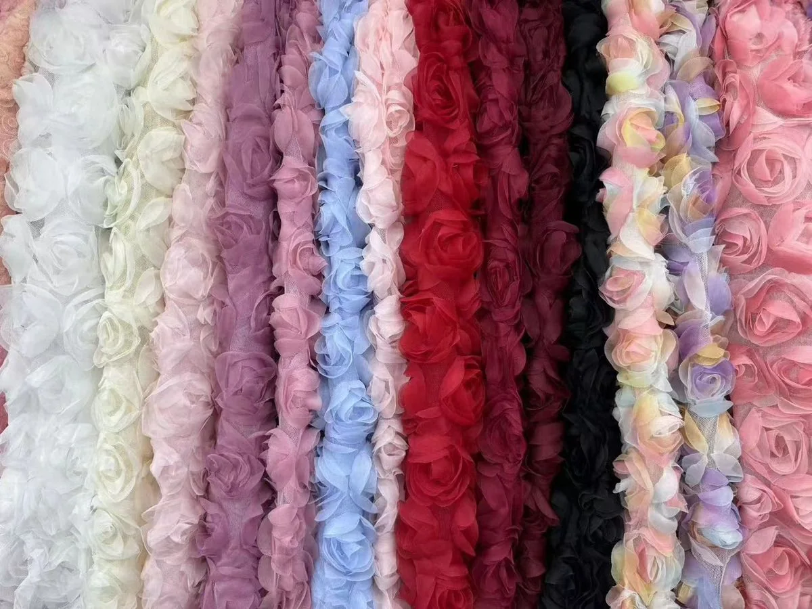

A fabric sample is the point where a sourcing brief becomes something a buyer can touch, compare and approve. It should be reviewed as more than a color swatch. Before placing a bulk order, the sample needs to be checked against the intended garment, the approved specification and the conditions in which the finished product will be sold or worn.
Use it to create a clear approval record with the supplier. If your market, customer or garment category needs testing or formal inspection, define that requirement separately before bulk production begins.
Use the sample as an approval reference
Start by defining exactly what the sample is expected to approve. A hand-cut swatch can help compare color and surface, but it cannot fully confirm fit, seam behavior, opacity or the way a fabric moves in a garment. For a new style, keep the swatch, the product specification, the reference image and any sewn trial together in one approval record.
Label the sample with the supplier, product code, composition, quoted width, quoted weight, color or SKU reference, date received and the intended application. If a sample is changed after the first review, record what changed. This avoids a common sourcing problem: the buyer and supplier use the same item name but are reviewing different versions of the fabric.
For example, a structured formalwear brief may start from YX920 thickened Mikado satin, while a light veil brief may start from YX1046 20D nylon plain tulle. Both are fabric samples, but the checks that matter most are different because the target garment function is different.
Check the listed specification first
Before judging whether a sample “looks right”, compare the supplied material to the information on the product page or quotation. At minimum, record composition, construction or technics, weight, usable width, color reference, MOQ and intended end use. These are the details that let a buyer compare two similar-looking options without relying on a photograph alone.
- Composition: confirm the fiber blend stated for the sample and whether stretch or coating is part of the construction.
- Weight: compare the listed gsm with the hand feel and body you need. A heavier number does not automatically mean a better result; it has to suit the silhouette. Use the fabric GSM guide when you need to compare weight, width and construction.
- Width: confirm the usable cutting width, not only the nominal width shown on a listing.
- Construction: identify whether the base is knitted mesh, woven satin, embroidered mesh or another route, because construction affects stretch, recovery, seams and drape.
- Commercial details: keep MOQ, color reference, packing expectation, destination and sampling lead time with the inspection note.
Current catalog items are useful comparison references, not a replacement for sample approval. For instance, YX693-2 white matte satin is listed as 100% polyester, 160gsm, 150cm wide and 50*300D, while YX807 3D rose embroidered tulle mesh is listed as 100% polyester, 130gsm and 140cm wide. The buyer should still verify the received sample and the garment-specific requirement before making a bulk decision.
Review surface, color and appearance
Check the sample in the lighting that matters for the final product. Diffuse daylight, direct retail lighting and camera flash can reveal different levels of sheen, transparency and color cast. If the fabric will be layered over a lining, place it over the intended lining color before approving it.

For matte or glossy fabrics, view the sample at multiple angles. Look for unwanted marks, streaks, pressure lines, visible yarn variation or a surface reflection that does not match the intended collection. For white, ivory, nude and other light shades, note any color cast against the actual lining, thread and trim. A difference that seems small on a tabletop can become obvious in a full garment or a product photograph.
For printed, embroidered or decorative surfaces, check motif scale, spacing, direction and the locations where the pattern will meet a seam. Do not approve a decorative sample only from a single close-up: place it on the approximate garment panel to see the visual scale.
Check drape, transparency and construction
Handle the sample in the same way the finished garment will use it. Fold it, hang it, gather it and place it over the planned underlayer. This reveals whether the material holds a structured edge, falls softly, becomes too transparent, or changes appearance when it is stretched or layered.

For an open or sheer base, use the actual planned layer count. YX1046 plain tulle is listed as a light 20gsm, 160cm-wide nylon mesh for bridal layers, veils, skirts and dancewear. A buyer should inspect the mesh for even openness, pulled areas, edge stability and the transparency created by the planned number of layers rather than assuming one loose swatch represents the final garment.

For 3D embroidery, beads, sequins or raised motifs, inspect both the decorative surface and the base fabric. Confirm that the motif is secure enough for the intended sample and that it will sit correctly across seams, hems and high-contact areas. YX807 3D rose embroidered tulle mesh is a useful current catalog example: its raised floral surface should be reviewed for motif direction, embroidery height, mesh transparency and lining compatibility.

Test a cut and sewn piece
A sample becomes far more useful when it is cut and sewn in a small trial. Use the planned grain direction and the intended lining where possible. This does not need to be a finished garment: a panel, gathered section, seam test or small mock-up can reveal problems that a flat swatch hides.
- Check whether cutting creates fraying, distortion or an unstable edge.
- Test seams for puckering, skipped stitches, visible holes, excess bulk or motif interruption.
- For stretch materials, check extension and recovery in the actual cut direction.
- Press only with a method suitable for the sample and note how the surface responds.
- Handle, fold and hang the sewn piece to see whether marks, wrinkles or decorative elements change.
Do not turn these practical checks into unverified technical claims. If a customer requires specific performance such as color fastness, shrinkage, abrasion, flame resistance or chemical compliance, agree the standard, test method, responsible party and acceptable result before bulk production.
Record the inspection result
Write down the outcome while the sample is in front of you. A short approval sheet is more useful than an email thread with vague phrases such as “looks good” or “please make it softer.” Mark each point as approved, revise, compare or pending. Attach photos taken in the approved lighting and note the sample code shown in each photograph.
When a change is needed, explain the change in measurable terms. Examples include: “match the approved ivory color reference”, “confirm a 150cm usable width”, “reduce the apparent surface gloss under direct lighting”, “check embroidery placement at the bodice seam”, or “send a sewn stretch-recovery sample.” This gives the supplier a practical correction route rather than a subjective request.
Fabric sample inspection checklist
Use this checklist with each sample before approving a bulk order. The product examples below are current YAQIXIN catalog references to help a buyer decide which observation belongs in the record.
| Check area | What to record | Useful example route | Decision |
|---|---|---|---|
| Identity and specification | Supplier, product code, composition, construction, listed weight, width, color reference and MOQ | YX693-2 matte satin | Approved / revise / pending |
| Surface and color | Color cast, sheen, marks, yarn variation and appearance over the intended lining | YX693-2 matte satin | Approved / revise / pending |
| Body and drape | Fold definition, softness, structure, wrinkle response and seam bulk | YX920 Mikado satin | Approved / revise / pending |
| Transparency and mesh | Layer count, openness, pulled areas, edge stability and lining compatibility | YX1046 plain tulle | Approved / revise / pending |
| Decorative construction | Motif scale, placement, raised surface, seam allowance and contact points | YX807 3D rose tulle | Approved / revise / pending |
| Cut and sewn trial | Cut edge, stitching, pressing, recovery, handling and finished-panel appearance | Use the intended garment route | Approved / revise / pending |
| Bulk-order record | Approved sample ID, photos, revision notes, packing, quantity, destination and delivery window | Custom fabric inquiry | Ready to quote / hold |
Turn findings into a clear inquiry
A well-documented sample review makes quotation faster and reduces avoidable back-and-forth. When you contact a supplier, include the product code or fabric family, the intended garment, approved or rejected points, color reference, width requirement, quantity, packing expectation, destination and required delivery date. If a change is needed, attach a marked image or a clear sample note.
You can compare the relevant fabric product pages, then use the custom fabric inquiry page or the site inquiry form to send the brief. This gives the team the information needed to confirm whether a stock route, a sample revision or a custom route is the right next step.
Buyer questions
Is a color swatch enough to approve a fabric?
Usually not. A swatch can support a color or surface decision, but a sewn trial or garment-panel test is more useful for checking drape, transparency, seam behavior and how the fabric works with the planned lining.
Should I inspect the sample before or after washing?
First follow the agreed care or test requirement for the end market. If the customer requires a wash or performance test, define the method and acceptance criteria before bulk production rather than relying on an informal result.
What should be approved before a bulk fabric order?
At minimum, approve the relevant sample identity, composition, construction, color reference, surface, usable width, garment behavior, quantity, packing direction and delivery details. Record any exception or pending test in writing.
What should I send if a sample needs revision?
Send the product code, photos of the current sample, the approved reference, a concise list of required changes, intended garment use, color direction, quantity, destination and timing. Measurable correction notes are easier to action than general comments.
Ready to discuss a fabric brief?
Share your intended application, a reference image or swatch, quantity, and market. We can help you compare a stock or custom fabric route before you place a bulk order.
Start a fabric inquiry